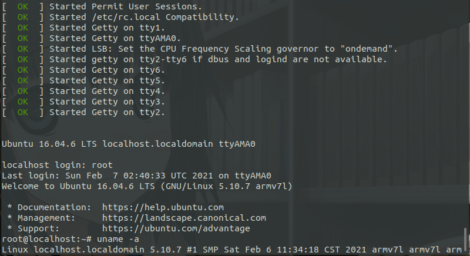

Ubuntu 16.04 rootfs 启用 ttyAMA0
[toc]
前言
上一篇文章《QEMU 进行 Arm 仿真开发》最后挂载Ubuntu 16.04根文件系统的时候启动失败；百思不得其解，皇天不负有心人，终在机缘巧合之下找到了解决方案。
Ubuntu 18.04 之后的版本已经没有这个问题了。
主机环境为 Ubuntu 20.04
原因
Ubuntu 16.04 的 systemd 默认没有启用 ttyAMA0
解决方案
# 挂载之前做好的镜像文件
sudo mount ubuntu_rootfs.ext4 rootfs
cd etc/systemd/system/getty.target.wants/
sudo cp -d getty@tty1.service getty@ttyAMA0.service
# 然后卸载镜像就行
使用命令启动仿真
sudo qemu-system-arm -M vexpress-a9 \
-m 256M \
-kernel arch/arm/boot/zImage \
-dtb arch/arm/boot/dts/vexpress-v2p-ca9.dtb \
-nographic \
-append "root=/dev/mmcblk0 rw console=ttyAMA0" \
-sd ../ubuntu_rootfs.ext4

由于个人水平有限，文中若有不合理或不正确的地方欢迎指出改正